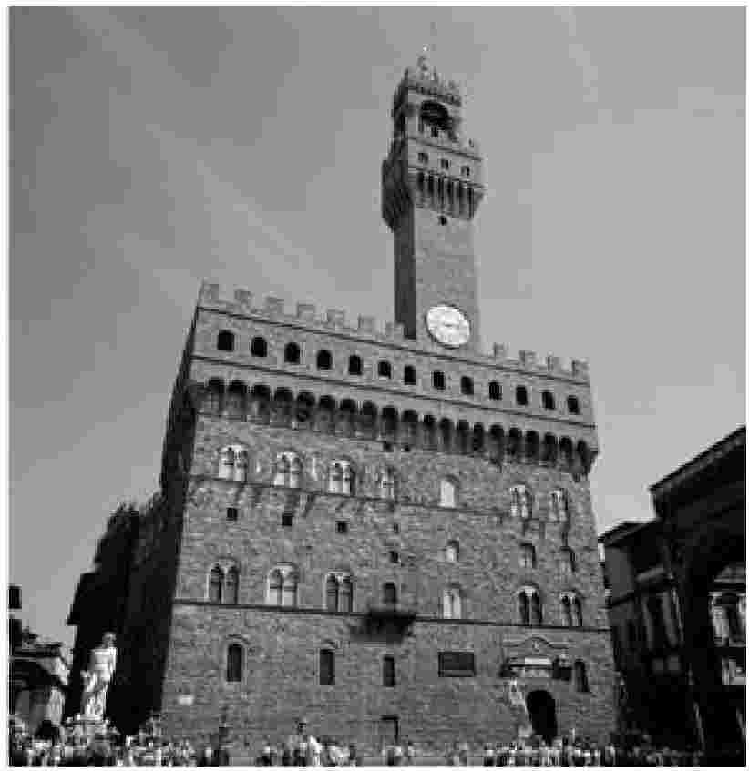

1469年5月3日，尼科洛·马基雅维里出生于佛罗伦萨。现存记录显示，1498年他开始在家乡事务中扮演积极角色，当时正值萨伏那洛拉控制的政府倒台。吉罗拉莫·萨伏那洛拉是圣马可修道院院长、多明我会会士。此前四年里，依靠先知式的布道，他在佛罗伦萨政坛呼风唤雨。这年4月初，他却因为异端罪名被捕，此后执政团 [4] 迅速出手，将政府中其残留的支持者解职。亚历山德罗·布拉切西 [5] 也受牵连失掉了第二国务厅长官的职位。最初这个位置空缺了一阵，但几星期之后，默默无闻的马基雅维里却进入了备选名单。他刚满29岁，似乎也没有行政经验。但他的提名没遇到明显的阻碍，6月19日，大议事会正式批准他担任佛罗伦萨共和国第二国务厅长官。

图1 佛罗伦萨的韦奇奥宫，1498—1512年间马基雅维里任职第二国务厅时在此工作。
马基雅维里进入国务厅的时候，该机构主要职位的聘任已经有一套固定的办法。竞聘者不仅要表现出外交才能，还应展示出所谓人文学问的深厚素养。这种人文研究（studia humanitatis [6] ）的观念源于罗马，尤其是西塞罗，他的教育理想在14世纪意大利人文主义者中间复活了，并逐渐对大学和意大利的公共生活产生了强烈影响。人文主义者的首要标志就是对“真正人文”的教育应当包含什么内容有特定的主张，并严格遵循。他们要求自己的学生先掌握拉丁语，然后研习修辞，模仿古典大家的风格，最后通过细读古代历史和道德哲学来完成学业。他们还让一个沿袭已久的观点深入人心，那就是这样的训练为政治生活提供了最好的准备。正如西塞罗反复强调的，这些学科能够培养治理国家所需的主要价值观：让个人利益服从公共福祉的意愿；对抗道德朽败 [7] 和专制统治的渴望；实现最崇高目标的雄心，也就是为自己和国家争得名誉和荣耀。
佛罗伦萨人日益受到这些信念的熏陶，于是开始征召他们中间最优秀的人文主义者出任市政府的顶层职位。这种做法可以说发端于1375年，当时科卢乔·萨卢塔蒂被任命为国务厅长官，很快这就成了通例。在马基雅维里的成长期，担任第一国务厅长官的是巴尔托洛梅奥·斯卡拉，他履职期间一直是大学教授，继续就典型的人文话题撰写著述，其代表作是一本讨论道德的专著和一部《佛罗伦萨人史》。马基雅维里担任国务厅长官时，斯卡拉的继任者马尔切洛·阿德里亚尼仍鲜明地延续了这一传统。他也是从大学教席走上了第一国务厅长官的岗位，也继续发表人文研究的著作，包括一本拉丁语教材和一本用意大利语撰写的《论佛罗伦萨贵族的教育》。
或许正因为这样的理想风行一时，年纪尚轻的马基雅维里才得以获得要职，参与共和国的管理。他的家庭虽不富庶，门第也不算高贵，却与城里最有声望的人文研究者圈子交游甚密。马基雅维里的父亲贝尔纳多是一位职业律师，对人文学问有热切的兴趣。他与几位最杰出的学者是好友，包括巴尔托洛梅奥·斯卡拉，后者在1483年发表的对话体著作《论法律和司法裁决》就以他本人和贝尔纳多·马基雅维里（被他形容为“我的挚友”）为讨论的双方。而且，从1474—1487年间贝尔纳多的日记看，在他儿子尼科洛的成长期，贝尔纳多一直在钻研构成文艺复兴时代“人文学问”根基的几部古典名著。根据记录，他在1477年和1480年分别借阅了西塞罗的《反腓力辞》 [8] 和这位作家的修辞学杰作《论雄辩家》。他还在1470年代多次借阅西塞罗最重要的道德学著作《论义务》，1476年他甚至还获得了一本李维的《罗马史》 [9] ——正是这本书在四十多年后为他儿子的《论李维罗马史前十卷》 [10] （马基雅维里篇幅最长、用力最深的政治哲学著作）提供了框架。
贝尔纳多的日记还表明，虽然经济投入巨大——逐条记录的花销表明了他的焦虑——他仍尽心竭力地为儿子打下最好的人文教育基础 [11] 。据我们所知，马基雅维里刚满七岁，这样的教育就开始了，当时他父亲记录称“我的小儿子尼科洛已经到马泰奥老师那里求学了”，正式教育的第一阶段是学习拉丁语。12岁的时候，马基雅维里进入下一阶段，由一位著名的校长保罗·达·隆齐里奥内接手，马基雅维里同辈中多位著名的人文研究者都出自他门下。1481年11月5日，贝尔纳多在日记中记下了这个进展，他自豪地宣布，“尼科洛已经能用拉丁语写文章了”——按照当时的标准教法，这意味着模仿最优秀的古典写作风格。最后，如果我们相信保罗·焦维奥的话，马基雅维里可能是在佛罗伦萨大学完成他的学业的。焦维奥在《博雅名人传》 [12] 中称，马基雅维里古典教育的“精华部分”应归功于马尔切洛·阿德里亚尼，而我们已经知道，阿德里亚尼在出任第一国务厅长官之前，曾在该大学任教数年。
上述的人文主义背景或许可以解释，1498年夏天马基雅维里为何突然获得政府任命。阿德里亚尼已在当年早些时候出任第一国务厅长官，在这政权更迭之际，为国务厅物色人选的他大约还记得马基雅维里在人文学问方面的才能，于是用职位作为回报——这样的猜想应算顺理成章吧。因此，马基雅维里在反萨伏那洛拉的新政府里登台亮相，很可能是靠了阿德里亚尼的奖掖，他父亲的人文主义朋友或许也发挥了影响。
马基雅维里需承担两方面的职责。第二国务厅成立于1437年，主要处理佛罗伦萨所辖领土的行政文书往来。但作为这个部门的领导，马基雅维里也是第一国务厅长官的六位秘书之一，正是由于这一身份，为军事十人团（负责共和国外交关系的委员会）服务的工作很快也分派给了他。这意味着除了日常文书工作外，他会代表十人团出使各国，扮演特使秘书的角色，并协助把外国事务的详细报告发回国内。
他首次获得这样的出使机会是在1500年7月，当时政府指派他和弗朗切斯科·德拉·卡萨“以最快速度”赶赴法王路易十二的宫廷（《出使篇》70页）。之所以派出这个使团，是因为佛罗伦萨在征讨比萨 [13] 的战争中遇到了麻烦。比萨人于1496年发动叛乱，在接下来的四年里，他们击退了所有绞杀独立运动的军事攻势。但在1500年初，法国人同意帮助佛罗伦萨人收复该城，并派出一支军队前往围攻。但这次行动也一败涂地：佛罗伦萨招募的加斯科涅 [14] 雇佣兵临阵脱逃，瑞士扈从军因为缺饷而哗变，进攻只好灰溜溜地取消。
政府指示马基雅维里，“务必澄清，战役无功而返不是由于我方的任何失误”，如有可能，还应“让对方感觉”，法国指挥官的表现“腐化怯懦”（《出使篇》72、74页）。然而，他和德拉·卡萨初次觐见路易十二便发现，佛罗伦萨对以往失败所做的辩解，国王没多少兴趣听。相反，他想知道的是，一个表现得如此混乱无能的政府，将来是否可能给法国提供实质性的帮助。后来他们又与法王及其主要顾问弗洛里蒙·罗贝泰和鲁昂大主教 [15] 举行多次磋商，但会谈的基调此时已经定下了。结果马基雅维里虽然在法国宫廷停留了几乎半年，他对法国政策的了解却没增加多少，反而对意大利城邦日益暧昧的政治地位感触甚深。
他学到的第一课是，在任何熟谙现代君王术的人看来，佛罗伦萨统治机器的犹豫与软弱都近乎荒谬。到了7月底，执政团如果不再派一个使团来重新商谈与法国结盟的条款，局面似乎就无法收拾了。从8月到9月，马基雅维里一直在苦等新特使启程的消息，并反复向鲁昂大主教保证，使团随时可能到达。到了10月中旬，依然没有使团的音讯，没完没了的敷衍之词招致了大主教毫不掩饰的鄙夷。马基雅维里在汇报中沮丧地说，当大主教得知承诺的使团终于出发的时候，他的“原话如下”：“没错，您是这么说的，可是等不到特使来，我们就已经死了。”（《出使篇》168页）更让马基雅维里感到屈辱的是，他发现家乡佛罗伦萨自视甚高，但在法国人看来，这样的认识跟它的军力和财力极不相称，可笑至极。他不得不告诉执政团，法国人“只看重有强大军队和掏钱意愿的人”，而他们已经确定，“你们两项条件都不具备”。虽然马基雅维里试图证明“你们的强大将保证法王在意大利的属地安全”，他却意识到自己“完全是白费唇舌”，因为法国人只以嘲笑作答。他承认，痛苦的真相是，“他们称你为废物先生”（《出使篇》126页及该页注释）。
这一课让马基雅维里耿耿于怀。他在成熟期撰写的政治著作中反复告诫，拖延是愚蠢的，表现得优柔寡断是危险的，战争和政治都需要果敢迅速的行动。但他显然无法接受进一步的推断：意大利城邦没有任何前途。他继续探讨这些城邦的军事和政治体制，因为他相信它们仍然能够恢复和维持独立地位，虽然在他的有生之年，它们却只能彻底臣服于法兰西、德意志和西班牙排山倒海的军队。
出使法国的任务于1500年12月结束，马基雅维里匆匆赶回家中。姐姐在他出国期间去世，父亲在他快动身的时候也去世了，所以家庭事务（他向执政团抱怨说）已经“完全陷入混乱”（《出使篇》184页）。此外，他也担心自己的职位，因为助手阿戈斯蒂诺·韦斯普奇在10月底曾向他报信，说已有风声，“如果你不回来，国务厅的职务就将不保”（《书信集》60页）。而且此后不久，马基雅维里又添了一个留在佛罗伦萨周围的理由：他开始向玛丽埃塔·科尔西尼求爱。两人于1501年秋天成婚，玛丽埃塔在马基雅维里的故事中从不显眼，但他的信件却表明，她是他一生钟爱的对象。玛丽埃塔为他生了六个孩子，默默忍受了他的不少出轨行为，在他死后继续活了四分之一个世纪。
接下来的两年，马基雅维里主要在佛罗伦萨及附近地区度过。这期间，执政团有了一个新的大患，切萨雷·博尔贾的军力不断增长，对边境构成严重威胁。1501年4月，博尔贾被父亲教皇亚历山大六世封为罗马涅 [16] 公爵。为了切分一块与这个响亮的新名号相配的领土，他发动了一系列冒险的攻势。首先他占据了法恩扎，围攻了皮翁比诺，并于1501年9月进入该城。然后他的手下于1502年春在瓦迪齐阿纳策动了针对佛罗伦萨的叛乱，与此同时，博尔贾本人挥师北上，用闪电般的突袭夺取了乌尔比诺公国。连续的胜利让他信心暴涨，于是他要求与佛罗伦萨人订立正式同盟，并命令他们派出代表，来听他开出的条件。这项棘手的任务交给了马基雅维里，他曾在乌尔比诺见过博尔贾。马基雅维里于1502年10月5日领命，两天后便在伊莫拉与博尔贾会面了。
这次使命标志着马基雅维里的外交生涯进入了成型期，正是在这一时期，他有机会扮演自己最喜欢的角色，做当代治国术的一手观察者和评估者。同样是在这一时期，在观察各国统治者决策的过程中，他形成了对他们中多数人的最终评价。常有人说，马基雅维里的《出使篇》包含的只是他晚期政治观点的“原材料”或者“草稿”，后来在被迫赋闲期间他才整合了这些事例和见解，并把它们视为普遍模式的范本。然而我们研读《出使篇》就会发现，马基雅维里对政治人物的评判，甚至他的警言妙论，在事发当时就已成型，后来几乎是不加改动地嵌入了《论李维罗马史前十卷》和《君主论》（后者尤其如此）。
马基雅维里出使博尔贾宫廷历时近四个月，在此期间，他与这位公爵有过多次面对面的讨论。博尔贾似乎是刻意向他解释自己的政策及其背后的野心。马基雅维里深受震动。他汇报说，公爵不仅抱负远大，而且“有超人的勇气”，他“认为自己可以从心所欲，无所不能”（《出使篇》520页）。他出语惊人，行动也毫不逊色，因为他“亲手掌控着一切事情”，管理手段又“极其隐蔽”，所以决策和实施都出人意料又有雷霆万钧之势（《出使篇》427、503页）。总之，马基雅维里意识到，博尔贾绝不是军事起家的暴发户，而是“必须严加提防的意大利新势力”（《出使篇》422页）。
这些评论最初是以密件形式发给军事十人团的，后来却成了人们津津乐道的名言，因为它们几乎原封不动地出现在《君主论》第七章里。在概述博尔贾的政治生涯时，马基雅维里再次强调了公爵的超凡勇气、出众才能和强烈的目标意识（33—34页）。他也重申，博尔贾的行动能力和策划能力同样卓越。“为了向下扎根”，他“用尽了一切可能的手段”，在极短的时间内就“为未来的霸业筑好了宏伟的地基”，如果不是运气突然背弃了他，他“必将征服一切困难”（29、33页）。
虽然马基雅维里佩服博尔贾的统治才能，但他从一开始就对公爵的极端自负感到不安。早在1502年10月，他就从伊莫拉写信说，“在我停留期间，公爵政权的唯一支撑是他的好运”（《出使篇》386页）。到了第二年年初，他对公爵的行为越发不满，因为后者仍然只寄望于自己“前无古人的好运”（《出使篇》520页）。1503年10月，马基雅维里出使罗马时，又获得了近距离观察博尔贾的机会，他先前对公爵的质疑此时已经凝固成一种判断：公爵的能力有重大缺陷。
马基雅维里的罗马之行主要是为了追踪教廷的一次罕见危机。教皇亚历山大六世死于8月，庇护三世继任不足一月又亡故。佛罗伦萨执政团急于获取每天的最新情报，以便预判形势，特别令他们不安的是，博尔贾已经改旗易帜，声援红衣主教朱利亚诺·德拉·罗韦雷出任教皇。这一动向可能会威胁到佛罗伦萨的利益，因为公爵的支持是以一项承诺为代价的：罗韦雷如果当选教皇，就必须任命博尔贾为教皇军统帅。看起来能够确信的是，博尔贾一旦获得这个头衔，就会在佛罗伦萨边境发动一系列新的敌对行动。
因此，马基雅维里最早的信函主要聚焦于红衣主教团的会议。罗韦雷在会上“以压倒性多数”当选教皇，即尤利乌斯二世 [17] （《出使篇》599页）。此事尘埃落定后，所有人的目光都转移到博尔贾和教皇之间日益尖锐的冲突上。两位玩弄权谋的高手开始对峙、试探，作为观众的马基雅维里意识到，自己当初对公爵能力的怀疑完全得到了印证。
他感觉博尔贾转而支持罗韦雷是缺乏远见的，因为他没看到其中的危险。马基雅维里提醒军事十人团，在公爵父亲亚历山大六世担任教皇期间，这位红衣主教“在外流亡十年之久”。他据此推论，罗韦雷“不可能这么快就忘掉了旧怨”，真心实意与仇人的儿子结盟（《出使篇》599页）。但马基雅维里对博尔贾最严厉的指责是，面临如此诡谲危险的形势，博尔贾依然深信自己吉人天相，就近乎妄诞了。最初，马基雅维里只是有些惊讶地评论道：“公爵让无节制的自信迷了心窍。”（《出使篇》599页）两周后，教皇的任命书仍未下达，博尔贾在罗马涅的领地纷纷叛乱，马基雅维里的语气变得刻薄起来，他说，公爵“在时运 [18] 的这些攻击面前惊慌失措”，“他还不习惯这种苦头呢”（《出使篇》631页）。到了月末，马基雅维里断定，博尔贾已被厄运摧垮，任何决定他都不能坚持到底了。11月26日，他已有把握向军事十人团预言，“从今往后，你们行动时再不必考虑他了”（《出使篇》683页）。一周后他最后一次提到博尔贾的事，只是淡淡地说，“公爵正慢慢滑进坟墓”（《出使篇》709页）。
和前面那些文字一样，这些对博尔贾的秘密评价也因为写进了《君主论》第七章变得尽人皆知。马基雅维里在书中再次声明，公爵支持“尤利乌斯担任教皇”是“错误的选择”，因为“他绝不应将任何他伤害过的红衣主教送上教皇宝座”（34页）。他仍坚持自己对公爵的基本指责——过分依赖运气。他没有直面一种显而易见的偶然性，那就是“时运的恶意打击”可能在某个时候挫败自己的事业，当此事变为现实，他立刻就崩溃了（29页）。虽然不乏钦佩，马基雅维里对博尔贾的最后断语却是负面的（在《君主论》中甚至比《出使篇》中还严厉）：他“赢得成功依凭的是父亲的时运”，而一旦时运弃他而去，立刻一败涂地（28页）。
马基雅维里接下来有机会直接观察的重要领袖是新教皇尤利乌斯二世。他当选前后，马基雅维里曾数次觐见，但他得以洞悉这位教皇的性格与权术却是在后来的两次出使期间。第一次是在1506年8月和10月间，马基雅维里回到了罗马教廷。执政团指示他随时通报尤利乌斯光复教皇领地的进展，这项夺取佩鲁贾、博洛尼亚等地的计划典型地体现了教皇咄咄逼人的风格。1510年机会再次降临，马基雅维里跟随新的使团前往法国宫廷。此时，尤利乌斯已决定发动一场浩大攻势，将“蛮族”赶出意大利。这番雄心却让佛罗伦萨人陷入了尴尬境地。一方面他们绝不想冒犯日益好斗的教皇，另一方面，他们又是法国的传统盟友。法国人立刻抛来一个问题：如果教皇进犯路易十二前一年刚夺回的米兰公国，他们将提供什么样的帮助？和1506年的情形相仿，马基雅维里一面紧张地追踪着尤利乌斯的战事，一面心存侥幸地盘算着如何保持佛罗伦萨的中立。
观察这位“战士教皇”的行动，马基雅维里最初颇感震撼，甚至觉得不可思议。一开始他不假思索地认为，尤利乌斯收复教皇领地的计划必将惨败。他在1506年9月写道，“没人相信”教皇“能够实现他设定的目标”（《出使篇》996页）。然而转瞬之间，马基雅维里就被迫咽下自己的预言。未到月底，尤利乌斯已经重新进入佩鲁贾，“平息了事态”，10月还没结束，马基雅维里的使命便已结束，他带回的惊人消息是，一番猛攻之后，博洛尼亚已无条件投降，“它的使臣蜷伏在教皇脚下，将城市呈交给他”（《出使篇》995、1035页）。
但是没过多久，马基雅维里便发出了质疑之声，特别是针对1510年尤利乌斯的一个令人震恐的决定：以他的微弱兵力与强大的法国对抗。开始他只是以嘲讽的口吻说，但愿“最终的结果表明”尤利乌斯的莽撞行为“并非依凭他本人的神圣地位”（《出使篇》1234页）。可是很快他的语气就变得严峻起来，“这里没人知道教皇的行动究竟有什么依据”，就连尤利乌斯的特使都承认，当前的局面让自己“瞠目结舌”，因为“他非常怀疑教皇是否有足够的资源和组织力量”来实现目标（《出使篇》1248页）。马基雅维里还不愿意直截了当地谴责教皇，他仍觉得，或许“像进攻博洛尼亚的战役一样”，教皇“仅凭自己的勇壮和威权”就把丧失理性的攻势转化成侥幸的胜利，也并非不可想象（《出使篇》1244页）。但总的来说，他已经开始被不可遏制的紧张情绪笼罩。他深有同感地重复着罗贝泰的一句话，大意是尤利乌斯仿佛“是上帝特意授命来摧毁世界的”（《出使篇》1270页）。他还异乎寻常地补充了一句极其严肃的评论，称教皇在他看来的确“决意让基督教世界变为废墟，让意大利成为瓦砾”（《出使篇》1257页）。
这段关于教皇行动的记述几乎原样出现在《君主论》中。马基雅维里首先承认，虽然尤利乌斯“在一切事情上都冲动莽撞”，但就连他最离谱的计划“也总取得成功”。然而，马基雅维里接下来便声称，这仅仅是因为“时代和环境与他的行事风格太合拍”，他才从未尝到无所顾忌带来的苦果。所以，尽管教皇战功显赫，马基雅维里却觉得必须严厉批评他的治国术。的确，尤利乌斯“凭借冒险行动实现的功业，其他教皇用尽人的智慧也不能企及”，但这只是“他的短寿”给人造成的印象，似乎他真是一位杰出的领袖。“倘若天假以年，需要谨慎行事的时刻到来，他的失败将无可避免，因为他永远不会放弃天性赋予他的那些方法。”（91—92页）
在1506年出使教廷和1510年重访法国之间，马基雅维里还因为一次外交任务离开过意大利。这次他有机会直接体验另一位重量级国君——神圣罗马帝国皇帝马克西米利安。 [19] 执政团决定派出使臣，是因为皇帝进军意大利并在罗马加冕的计划令他们不安。公布此项计划时，他向佛罗伦萨人索要一大笔赞助，帮他克服财政困难（他似乎永远缺钱）。他若来，执政团自然急于迁就他；他若不来，他们就不肯掏钱了。他真要来吗？1507年6月，他们派弗朗切斯科·韦托里去探明情况，但他的汇报却模棱两可，六个月后，他们给了马基雅维里一番指示，命他再去打探。两位使臣在帝国宫廷滞留到第二年6月，那时远征计划显然已取消了。
马基雅维里对哈布斯堡家族首领的评价完全不像他对切萨雷·博尔贾和尤利乌斯二世那样严谨缜密；自始至终，他对这位皇帝只有一个印象：昏庸无能，几乎没有治国所需的任何素质。马基雅维里觉得，他最根本的弱点在于，总是“犹豫、轻信”，结果“听到任何一种不同的观点，他的想法都会立刻动摇”（《出使篇》1098—1099页）。如此一来，根本无法和他谈判，因为即使他开始已经做了决定——例如进军意大利——我们仍可以保险地预言，“只有上帝知道会如何收场”（《出使篇》1139页）。这种性格也极大地削弱了他的领导权，因为所有人“都始终茫然无绪”，“没人知道他究竟会如何行动”（《出使篇》1106页）。
马基雅维里在《君主论》中对这位皇帝的描绘基本上复制了早期的印象。他在第二十三章以马克西米利安为例讨论了君主应该如何听取好的建议。这位皇帝的行为被当作反面教材，用以警告君主，如果在谋臣面前缺乏决断会招致怎样的危险。马基雅维里形容他“毫无主见”，一旦他的计划“已广为人知”，然后又“遭到身边人的反对”，他便立刻失去方向，“把当初的目标抛在脑后”。和这样的人打交道，让人沮丧透顶，因为“没人知道他到底想做什么”；这样的统治者也完全不称职，因为他的任何决定“都不可信赖”，“今日所成就的，他明日便毁掉”（87页）。
马基雅维里亲身领教了这些国君显贵的行事之道，当他将最终评价诉诸文字时，已经得出结论：所有这些人都没能正确理解一个简单却又根本的道理，结果他们的事业多以失败告终，即使成功，也应主要归于运气，而非睿智的政治判断。面对变化的形势不能做出主动的调整，这是他们共同的、全局性的致命缺点。切萨雷·博尔贾任何时候都目空一切，马克西米利安永远都优柔寡断，尤利乌斯二世从来都冲动亢奋。他们都不肯承认，如果自己能够努力抑制个性，去适应时势的要求，而不是企图用个性来改造时势，他们的功业会远为辉煌。
最终，上述体悟成了马基雅维里在《君主论》中分析统治术时的核心观点。但早在以外交官身份四处奔波的年代，他就已把这份心得记录下来。而且，从《出使篇》可以看出，这个结论最初其实不是他自己的概括，而是对别人观点的消化吸收。在他接触过的最精明的政客中，有两位曾向他表达过类似的观点。他第一次听到这样的议论是在尤利乌斯二世当选教皇的那天。马基雅维里与弗朗切斯科·索代里尼搭上了话，此人是沃尔泰拉的红衣主教、佛罗伦萨元首（gonfaloniere）皮耶罗·索代里尼之兄。红衣主教对他说，“这么多年来，咱们的城市从没像今天这样对新教皇寄予如此的厚望”，但他又补充道，“只有知道怎样和时代合拍才行”（《出使篇》593页）。两年后，在与锡耶纳统治者潘多尔福·彼得鲁奇谈判的时候，马基雅维里又听到同样的见解。他在《君主论》中称赞这位贵族“很有才干”（85页）。执政团给马基雅维里的任务是质问潘多尔福，他对佛罗伦萨“用尽阴谋诡计”，究竟是何居心（《出使篇》911页）。潘多尔福放言无忌的态度让马基雅维里颇感震惊。“每天我都尽量少犯错，”他说，“我管理政府按日安排，处理私事按小时安排，因为时势永远比我们的智力强大。”（《出使篇》912页）
虽然一般而言，马基雅维里对同时代的统治者批判甚为严厉，但如果据此认定，当时的治国术在他眼里无非是一部罪恶、愚蠢和灾祸组成的历史，那就错了。在外交生涯的某些时刻，他曾目睹政治难题得到果断圆满的解决，这些方案不仅令他由衷钦佩，也明显对他自己的治国理论产生了影响。1503年的事件就是一例。在切萨雷·博尔贾和教皇旷日持久的智谋战中，马基雅维里兴致勃勃地关注着尤利乌斯二世如何处理一个复杂的局面：作为敌人的公爵就在自己的教廷里。他提醒军事十人团，教皇对博尔贾“经年累月的仇恨尽人皆知”，但这改变不了博尔贾在他登顶过程中“功劳最大”的事实，因此他“向公爵许下了不少慷慨的诺言”（《出使篇》599页）。困境似乎无法摆脱：尤利乌斯怎么可能既不受公爵的羁绊，又不违背自己庄严的承诺？
马基雅维里很快发现，答案分为两步，都简单得惊人。升任前，尤利乌斯刻意强调，自己是“一诺千金的人”，绝对会信守誓言，与博尔贾“保持联系，以便兑现承诺”（《出使篇》613、621页）。但他刚感觉地位稳固下来，便翻脸不认账了。他不但拒绝授予公爵头衔和军队，而且下令将他逮捕并囚禁在自己的官邸里。目睹他的闪击行动，马基雅维里难以抑制自己的惊愕和仰慕之情。“瞧，”他感叹道，“这位教皇多么光明正大地着手清偿债务：他就这么直截了当地把它们一笔勾销了。”更重要的是，马基雅维里评论道，教皇的名声没受到任何玷污，相反，“所有人都和从前一样热烈地亲吻 [20] 教皇的手”（《出使篇》683页）。
这次，博尔贾的表现让马基雅维里失望，他竟如此轻易被敌人暗算，一败涂地。马基雅维里以他典型的语气总结道，公爵根本不该以为“别人的话比自己的话更值得信赖”（《出使篇》600页）。尽管如此，观察博尔贾的政治行动无疑让马基雅维里获益最多，他曾有两次难得的场合目睹博尔贾处理和化解一场严重危机的全过程，后者的果决和自信赢得了他毫无保留的尊敬。
一次是在1502年12月，当时罗马涅人突然发声，控诉博尔贾的副手利米罗·德·奥尔科在上年“安抚”该省时采用的高压手段。利米罗自然只是执行公爵的命令，而且成效卓著，整个地区很快摆脱混乱，恢复了秩序。但他的铁腕政策也激起了广泛的仇恨，此时已威胁到该省的长治久安。博尔贾该如何应对？他的方案干脆利落，却又令人毛骨悚然，马基雅维里的记述也同样简练生动。利米罗被召到伊莫拉，四天之后“广场上发现了他的尸体，被切成了两块，并且一直留在那里，好让所有人看到”。“公爵很乐意向人们展示，”马基雅维里说，“他可以根据手下的功过任意生杀予夺。”（《出使篇》503页）
大致在同一时间，博尔贾还解决了罗马涅的军事困局，他的方式让马基雅维里既震惊又佩服。最初公爵只能依靠当地的小领主为自己提供主要的军事支持。但到了1502年夏，形势已经表明，他们的首领——尤其是奥尔西尼家族和维泰利家族——不仅难以信任，而且已经在密谋背叛。他该如何行动？他的第一步就是直接除掉他们。他假装与他们和好，召集他们到塞尼加利亚开会，将他们集体屠灭。唯有这一次，马基雅维里无法保持他刻意的冷静风格，当他描述这次行动时，坦承“这样的局面”让自己“惊愕得失去了方寸”（《出使篇》508页）。然后，博尔贾决定从此再不借力于这种毫无忠心可言的盟军，而要建立自己的军队。这一做法在当时简直闻所未闻，几乎所有意大利君主都依靠雇佣军作战，但马基雅维里却立刻感觉到这是极具远见的政策。他明显以赞赏的口吻汇报说，公爵不仅决定要让“属于自己的军队”从此成为“他权力的一个基础”，而且开始以惊人的速度招募士兵，“并已举行了有五百步兵和五百轻骑兵参加的检阅仪式”（《出使篇》419页）。马基雅维里改用告诫的语气解释道，他之所以“乐于把此事记录下来”，是因为他已经相信，“任何拥有嫡系部队和良好军备的人，无论形势如何变幻，都能保持优势地位”（《出使篇》455页）。
到了1510年，经过十年出使国外的历练，马基雅维里对自己遇见的多数政治家都有了定评，只有尤利乌斯二世仍多少让他捉摸不透。一方面，马基雅维里觉得教皇在1510年对法国宣战的行为近乎疯狂，是不负责任的行为。无须任何想象力便可看到，“这两大势力的敌对局面”对佛罗伦萨来说意味着“最可怕的祸患”（《出使篇》1273页）。另一方面，他又情不自禁地希望，借助他不计后果的闯劲，尤利乌斯或许会再次成为意大利的救星，而不是灾星。博洛尼亚战役结束后，马基雅维里甚至梦想，教皇会不会“完成更伟大的功业”，让“意大利一劳永逸地摆脱那些企图吞并它的力量”（《出使篇》1028页）。四年之后，尽管国际危机越发严峻，他的恐惧也日益加深，他仍在安慰自己，或许教皇会像“在博洛尼亚那样”，再次“将所有人带在身后”（《出使篇》1244页）。
不幸的是，对马基雅维里和佛罗伦萨来说，事实印证的是他的恐惧，而不是他的希望。由于1511年在战场上严重受挫，尤利乌斯建立了一个最终改变了意大利样貌的同盟。1511年10月4日，他与西班牙国王费迪南德签署了神圣同盟协议，获取了西班牙的军事支持，以对抗法国。1512年的新攻势刚启动，可怕的西班牙步兵就开进了意大利。他们首先击退了法军的进攻，迫使他们撤出拉韦纳、帕尔马、博洛尼亚甚至米兰。然后他们便转身收拾佛罗伦萨。该城一直不敢冒犯法国人，因而也就没有明确支持教皇。现在它要为这个错误付出惨重的代价。8月29日，西班牙人洗劫了邻近的普拉托城，三天以后佛罗伦萨人就投降了。元首索代里尼逃往国外，美第奇家族时隔18年重返佛罗伦萨，几周之后共和国就瓦解了。
马基雅维里的好运和共和国政府的好运一起崩溃了。11月7日，他被正式解除国务厅的职务。三天以后，他被判处在佛罗伦萨国土上监视居住一年，保证金高达一千弗罗林 [21] 。1513年2月，真正的厄运降临了。他被误认为卷入了一起针对新上台的美第奇政府的未遂政变，一番酷刑折磨之后，他被投入监狱，并被处以巨额罚金。后来他在《君主论》的献词中向美第奇家族诉苦：“时运的恶意强烈而执拗”，以迅雷之势凶狠地击倒了他（11页）。